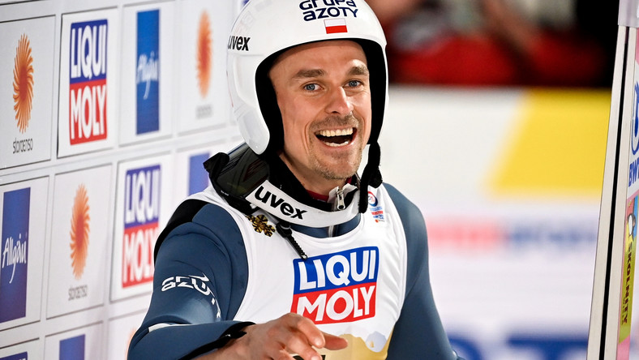
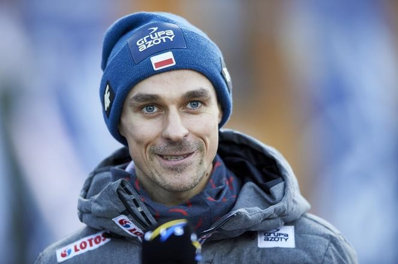
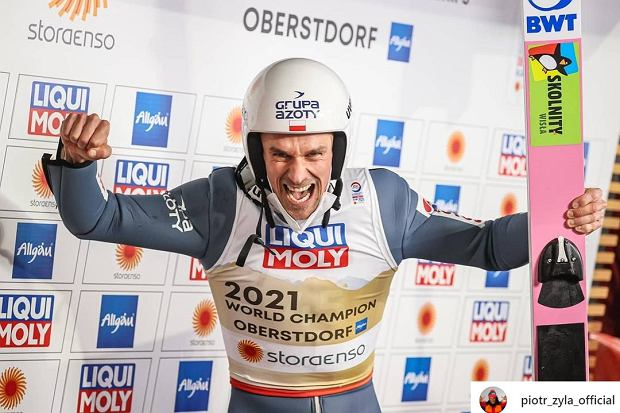

Piotr Żyła
Urodził się 25 maja 1987 w Zakopanem, zawodnik klubu KSEZ, reprezentant Polski oraz czterokrotny olimpijczyk. Trzykrotny indywidualny mistrz olimpijski (dwa tytuły w 2014 i jeden w 2018), drużynowy brązowy medalista olimpijski z 2018, indywidualny mistrz świata z 2013 i wicemistrz z 2019, drużynowy mistrz świata z 2017, dwukrotny drużynowy brązowy medalista mistrzostw świata (2013 i 2015), indywidualny srebrny i drużynowy brązowy medalista mistrzostw świata w lotach narciarskich z 2018, dwukrotny drużynowy wicemistrz świata juniorów (w 2004 i 2005), dwukrotny zdobywca Pucharu Świata (w sezonach 2013/2014 i 2017/2018), zwycięzca 65. i 66. Turnieju Czterech Skoczni oraz turniejów: Raw Air 2018, Willingen Five 2018 i Planica 7 2018. Dwukrotnie wybierany najlepszym polskim sportowcem w plebiscycie "Przeglądu Sportowego" (w 2014 i 2017). Kawaler Krzyża Kawalerskiego Orderu Odrodzenia Polski i Medalu Holmenkollen.
O sukcesach sportowych Piotra wiemy wszyscy. Poznajmy jednak kilka szczegółów z życia prywatnego naszego mistrza!
Życie prywatne
Piotr Żyła jest synem Krystyny, pracującej w Urzędzie Miasta w Zakopanem, i Bronisława, psychologa sądowego i klinicznego. Ma dwie siostry: Annę (ur. 1983), psycholog z wykształcenia, w przeszłości pracującą w przedszkolu na Cyprze, mieszkającą w Zakopanem, oraz Natalię (ur. 1985), która w młodości trenowała biegi narciarskie, prawniczkę z wykształcenia, pracującą w firmie prawnej w Krakowie, mieszkającą w Bielsku-Białej. Jego dziadek Franciszek w czasie II wojny światowej był więziony w niemieckim obozie Plaszow, skąd uciekł i pieszo dotarł do Zakopanego. W czasie okupacji zajmował się przemytem.
Żyła wychowywał się i uczył w miejscowości Ząb. Jest absolwentem Zespołu Szkół Mistrzostwa Sportowego w Zakopanem. W maju 2006 zdał maturę. Ukończył Akademię Wychowania Fizycznego w Krakowie, a w październiku 2012 został magistrem wychowania fizycznego. 7 sierpnia 2010 w kościele oo. Paulinów na Bachledówce we wsi Czerwienne zawarł związek małżeński z Ewą Bilan, artystką fotografem z wykształcenia pedagog, absolwentką Krakowskich Szkół Artystycznych, która przyjęła dwuczłonowe nazwisko (Bilan-Żyła).
Jak przebiegała kariera Piotra od czasów młodego chłopaka jeżdżącego po raz pierwszy na nartach, aż po zdodywcę złotego medalu olimijskiego?
Przebieg kariery
Na nartach zaczął jeździć w wieku trzech lat, a pierwsze skoki na skoczniach budowanych wspólnie z kolegami oddał w wieku lat czterech. Pierwszymi zawodami narciarskimi, jakie oglądał na żywo, był konkurs skoków w ramach Zimowej Uniwersjady 1993 w Zakopanem. W tym samym roku dostał od swego wujka pierwsze narty skokowe. W wieku ośmiu lat zapisał się do klubu LKS Ząb, gdzie opiekowali się nim m.in. Mieczysław Marduła i Jadwiga Staszel. Początkowo trenował kombinację norweską. Jako uczeń szkoły podstawowej w sezonie 1995/1996 zadebiutował w lidze szkolnej i wygrał siedem konkursów w kategorii "1986 i młodsi". Ponadto w styczniu wziął udział w Małym Memoriale płk. Franciszka Wagnera, który ukończył na szesnastym miejscu w kategorii "1984 i młodsi".
31 lipca 1999 został mistrzem świata młodzików, oddając skoki na 43,5 m i 40 m oraz wyprzedzając o pół punktu srebrnego medalistę Matevza Sparoveca. Drużynowo ponownie był trzeci. W sierpniu zajął drugą lokatę w Pucharze McDonald’s oraz Letnich Mistrzostwach Makroregionu. W obu przypadkach przegrał ze Stefanem Hulą. W październiku wygrał Ogólnopolskie Spotkania UKS w kategorii 1986-1987. Ponadto tamtego lata zwyciężył w trzech konkursach letniej ligi szkolnej.
18 września w Klingenthal odniósł podobnie jak rok wcześniej zwycięstwo w konkursie do lat trzynastu, obsadzonym głównie przez niemieckich juniorów. W grudniu w mistrzostwach makroregionu ponownie przegrał tylko z Hulą. Na Mistrzostwach TZN w konkursie na Małej Krokwi w kategorii "1984 i młodsi" zajął trzecie miejsce, a na Maleńkiej Krokwi w niższej kategorii wygrał. W styczniu odbyły się Mistrzostwa Śląska w Szczyrku. Wziął udział w czterech konkursach, a najlepszy rezultat – drugie miejsce, za Mateuszem Rutkowskim - uzyskał w konkursie na skoczni 30-metrowej dla rocznika 1986 i młodszych. W rywalizacji open na większym obiekcie był 30. W lutym w Karpaczu zajął 16. miejsce w otwartym konkursie o Puchar Burmistrza tego miasta. Wygrał też konkursy marcowych Mistrzostw SMS-ów w Zakopanem na obiektach K-65 i K-85 w kategorii "1984 i młodsi". Ponadto pięciokrotnie stawał na podium ligi szkolnej, trzykrotnie zwyciężając. W marcu stanął jeszcze na najniższym stopniu podium w Ogólnopolskich Spotkaniach UKS na Maleńkiej Krokwi (za Rutkowskim i Hulą). Wygrał też towarzyski Puchar RMF FM.
Żyła został powołany do prowadzonej przez Łukasza Kruczka pierwszej grupy kadry A Reprezentacji Polski w sezonie 2012/2013. Do pierwszego konkursu Letniego Grand Prix 2012 był prekwalifikowany, jednak wziął udział treningowo w kwalifikacjach w Wiśle - skoczył na odległość 109 m. W konkursie drużynowym otwierającym rywalizację w LGP oddał skok na odległość 122,5 m, a druga seria została odwołana. Polska zajęła drugie miejsce. Następnego dnia w konkursie indywidualnym po skoku na 128 m w pierwszej rundzie znajdował się na trzecim miejscu w klasyfikacji, jednak w drugiej serii oddał skok na 124,5 m, który spowodował jego spadek na siódmą lokatę. Po zawodach trener Kruczek podkreślił, że Żyła wykonał duży postęp w ostatnim okresie przygotowań przed LGP, a dyspozycja tego zawodnika jeszcze kilka dni przed pierwszym oficjalnym treningiem była daleka od tej zaprezentowanej w konkursach. Również Żyła przyznał, że trener obdarzył go dużym zaufaniem. Letnie mistrzostwa Polski na Malince zakończyły się dla niego trzecim miejscem i brązowym medalem, po skokach na 122,5 m i 120 m. Stracił 0,8 pkt do srebrnego medalisty Krzysztofa Bieguna i 21,7 pkt do zwycięzcy, Macieja Kota.
Po absencji w kilku konkursach LGP spadł w klasyfikacji tej serii na 41. miejsce. Powrócił do rywalizacji w tym cyklu w Hinzenbach, gdzie konkurs odbył się 30 września. Po pierwszej serii był piętnasty ze skokiem na 87 m. W finałowej kolejce wylądował metr dalej i awansował na dziewiąte miejsce. W klasyfikacji generalnej znalazł się na trzydziestej pozycji. W Klingenthal zajął trzecie miejsce w kwalifikacjach. Po pierwszej serii konkursowej był siedemnasty (uzyskał 129,5 m), a ostatecznie zajął jedenaste miejsce po osiągnięciu 133 m w finale. W klasyfikacji generalnej cyklu był ostatecznie 25 z dorobkiem 89 pkt, co było trzecim rezultatem wśród reprezentantów Polski w LGP.
"Miałem niezbyt udany początek. Pewnie wynikało to z tego, że nastąpiła zmiana przepisów odnośnie kombinezonów. Muszę przyznać, że ze zmienionymi strojami nie czułem się najlepiej. (...) Zbyt mocno to wszystko wziąłem do siebie. Wiem, że przez to pogubiłem się w technice skakania. To, co robiłem na skoczni nie przypominało tego, jak prezentowałem się zimą. Skakałem bardziej defensywnie i tutaj był największy kłopot."
W kwalifikacjach do konkursu w Oberstdorfie otwierającego 61. Turniej Czterech Skoczni oddał skok na 131 m i zakwalifikował się z 16. pozycji. W systemie KO został przyporządkowany Jace Hvali. Polak oddał skok na 132,5 m i uzyskał 140,6 pkt., co dało mu piątą lokatę, zaś Hvala awansował jako lucky loser ze skokiem o pięć metrów krótszym. W drugiej serii czołówka skakała z obniżonego rozbiegu. Żyła jako jedyny z niej skoczył poniżej 130 m – na 125 m i został sklasyfikowany na czternastej pozycji z notą 264,3 pkt., ze stratą 44,3 pkt. do zwycięzcy, Andersa Jacobsena. Po dyskwalifikacji Koflera awansował jednak o jedno miejsce. Po tych zawodach spadł o jedną pozycję w generalnej tabeli Pucharu Świata.
W serii kwalifikacyjnej do zawodów w Innsbrucku zajął, wraz z Maciejem Kotem i Andersem Jacobsenem, drugą pozycję, skacząc na 125 m. Nie licząc wyników prekwalifikowanej dziesiątki, razem z Kotem zwyciężył w kwalifikacjach. Jego konkurentem w systemie KO został Anton Kaliniczenko. Polak plasował się na czwartej pozycji po pierwszej serii – skoczył na 124,5 m i pokonał Kaliniczenkę o 30,7 pkt. W drugiej oddał skok na 123 m, co przy krótszych próbach wyprzedzających go po pierwszej rundzie Jacobsena i Bardala, poskutkowało awansem Polaka na drugą pozycję, ze stratą 12,8 pkt. do zwycięzcy Schlierenzauera. Po tym konkursie awansował na szóstą pozycję w klasyfikacji Turnieju i na dziesiąte w klasyfikacji Pucharu Świata.